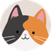
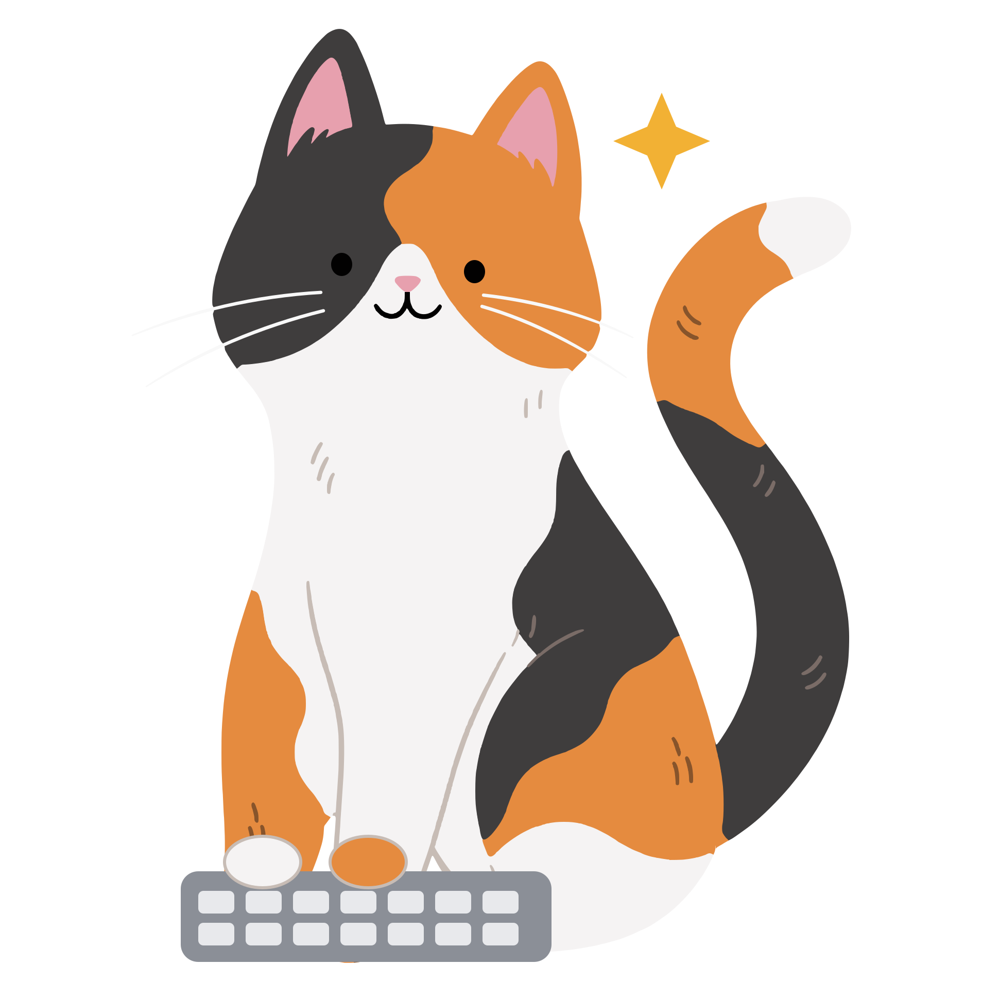
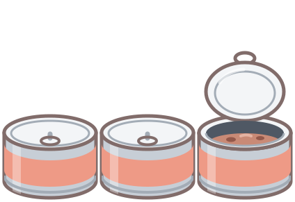
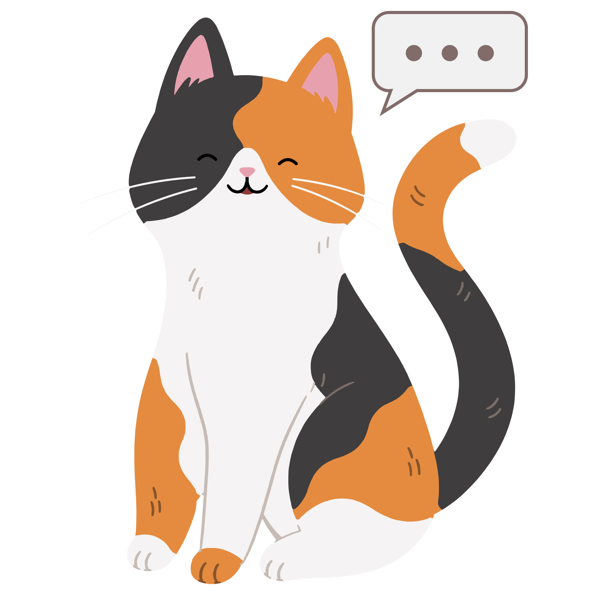
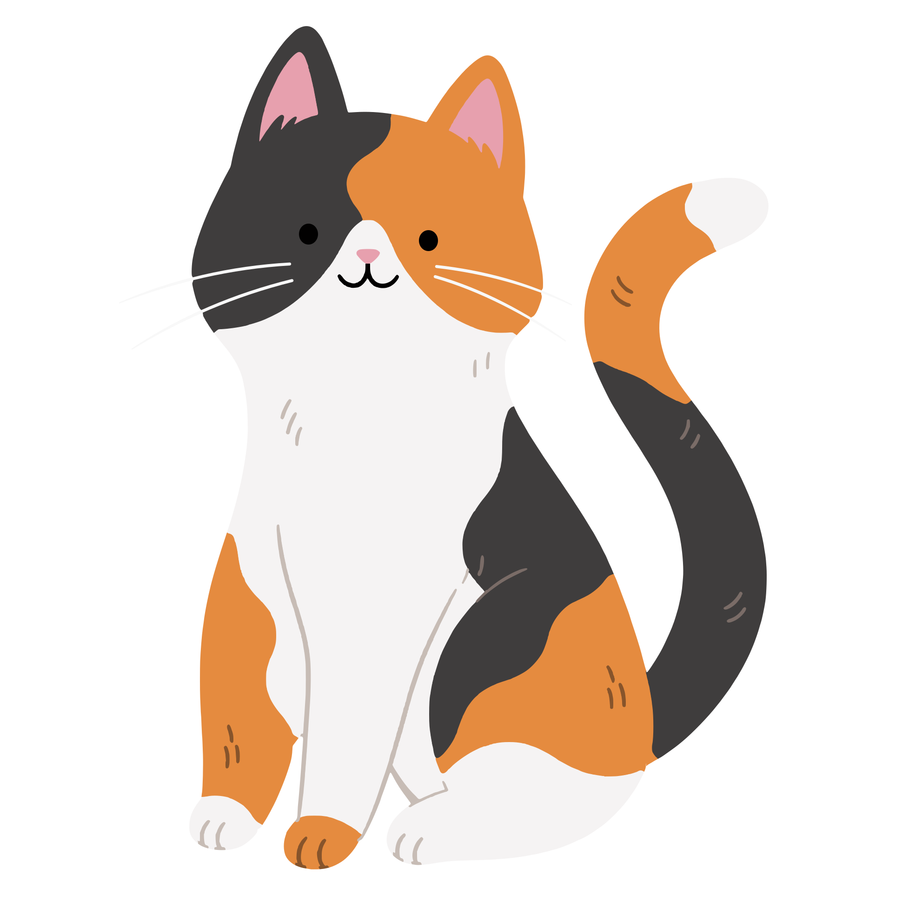
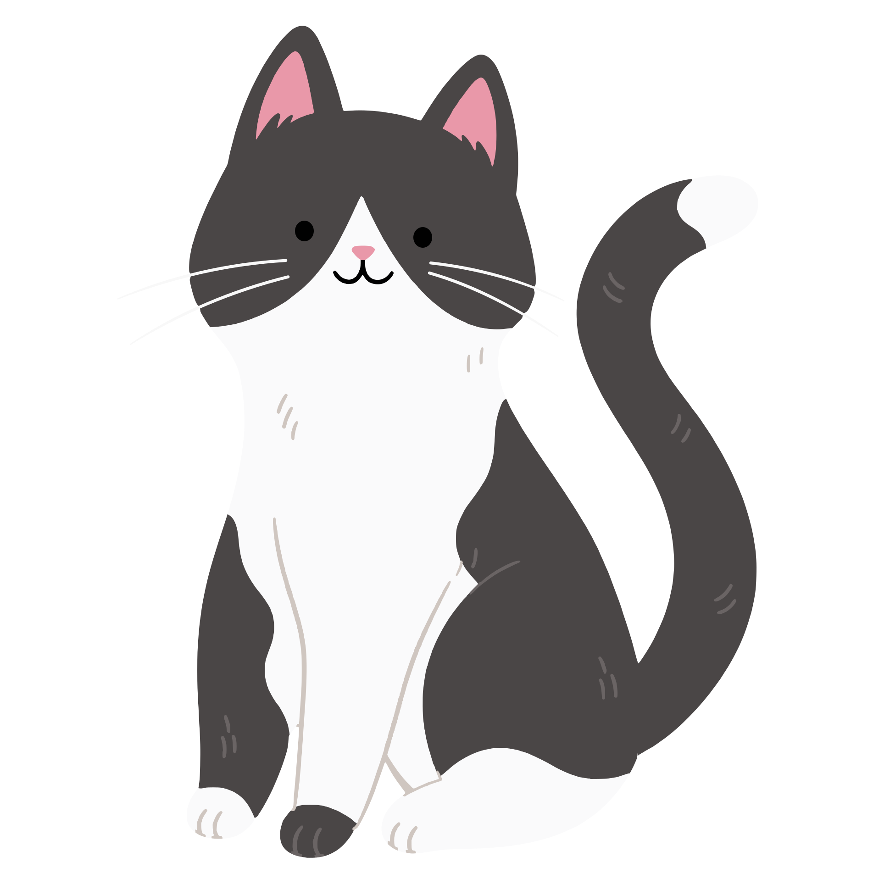

Claude 貓思考中…
雲朵裡輪流冒出小宇宙、問號和魚

DesktopCat 桌面貓Windows 桌面上的貓 · 免費
Claude 變成一隻住在你桌面上的貓：想事情時頭上冒出雲朵，做事時噠噠噠敲鍵盤，做完了喵一聲告訴你，再窩進坐墊睡覺。
搭配 Claude Code 使用 · 貓咪本身不連網路，也不會把你的資料傳出去


每個對話在做什麼，桌面貓都看得到。不用切回 Claude 的視窗，瞄一眼桌面就知道。

雲朵裡輪流冒出小宇宙、問號和魚
讀檔案、改程式的時候

Claude 貓開始回覆你了

喵一聲，伸出前腳輕點桌面等你回應
你的稱讚也會傳回 Claude 的對話

先坐著打瞌睡，再窩進坐墊
貓旁邊那疊罐罐，是 Claude 這週還剩的用量；最上面打開的那罐，是這 5 小時的。滑鼠移上去，會顯示還剩多少。（需要 Claude 訂閱方案）
三花、賓士、暹羅三種花色。坐墊有 8 種顏色，罐罐的顏色和口味也能換。在 Claude 桌面版裡，每段回覆旁邊的貓咪頭像也會換成同一隻。

三花

賓士

暹羅
請貓貓吃罐罐
桌面貓的功能全部免費。你的支持，是牠長出新花色、學會新動作的動力。
付款由綠界科技處理，可以刷卡或用 Apple Pay。按下按鈕後，在綠界的頁面填入金額就完成了。贊助不會解鎖任何功能。
把這個網址貼給 Claude，請它幫你安裝桌面貓。
https://github.com/hannahindielab/desktop-cat
不用。桌面貓和 Claude 外掛全部免費，原始碼也公開在 GitHub 上。
不會。桌面貓只在你的電腦上看 Claude 正在做什麼，自己不連網路，也不會把你的資料傳給任何人。
要。貓是跟著 Claude Code 的對話換姿勢的，Claude 桌面版的 Code 分頁或終端機都可以。
目前只有 Windows 版。